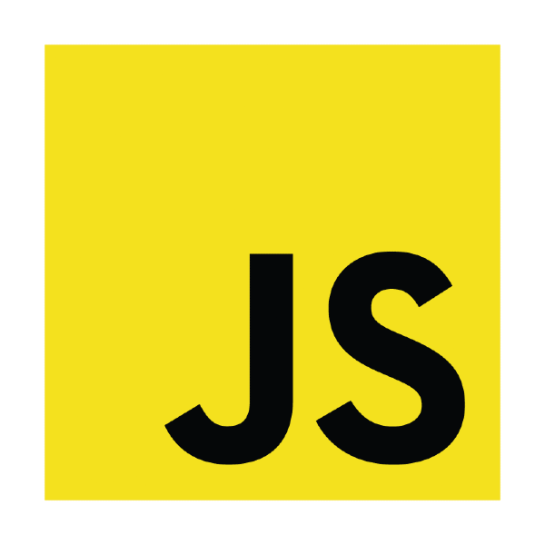

Mi nombre es
Hola, bienvenido

Sobre mí
Estudiante de ingeniería en sistemas computacionales enfocado en el desarrollo de software, soy autodidacta, cuento con la capacidad para trabajar y coordinar un pequeño equipo, gestionar proyectos pequeños e interpretar requisitos.
Uso de tecnologías para la comunicación y administración de proyectos, considero el flujo de comunicación como algo fundamental en el desarrollo del software.
Busco especializarme en el desarrollo web, mejor arando mis habilidades blandas para una mejor gestión de proyectos, así como mi creatividad para encontrar nuevas soluciones problemas que se llegan a presentar.
Cuento con la actitud de adaptación frente a problemas nuevos, destacado como una persona sociable en el trabajo y equipo.

Conocimientos
Aquí plasmo los conocimientos y tecnologías que he usado a lo largo de la carrera, y como estudiante autodidacta
Lenguajes de programación
-

-

-

-

- 
Bases de datos
Desarrollo Web


Herramientas y entornos de desarrollo

- Github
- Slack
- Visual Studio Code
- Android Studio
- Figma
- NetBeans
- PowerShell
- Visual Paradigm
- phpMyAdmin
- MySQL Workbench
- Git
- Jira
- Blender
Otros conocimientos
-
API REST
-
NodeJs
-
Metodologías agiles (Scrum, EX)
-
Metodología en cascada.
Modelado, Diagramas UML
- Diagramas Entidad-Relación (ER)
- Diagramas Secuencia
- Diagramas Clases
- Diagramas Actividad
- Diagramas Casos de uso
Experiencia
Pensemos Web, desarrollo FrondEnd:
Aproximadamente de Marzo 2023 a Octubre 2023
La experiencia obtenida fue el desarrollo deproyectosFrondEnd usando la metodología ágil Scrum, uso de Jira para gestar el proyecto, trabajar en equipo y usar Slack para la comunicación. Usar Git, Github y Bitbucket para controlar las versiones de los sitios web.
Innova TecNM 2024
Me desempeñe como estudiante líder en el certamen de proyectos hasta la etapa regional, en el aplique los conocimientos sobre desarrollo web con el objetivo de crear una PWA para el registro de glucosa usando React, Bootstrap entre otras librerías.